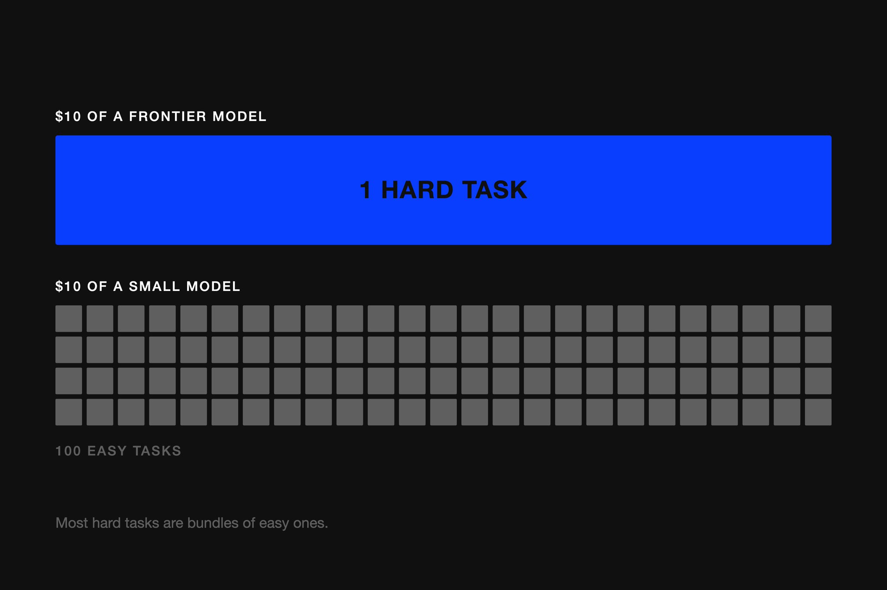
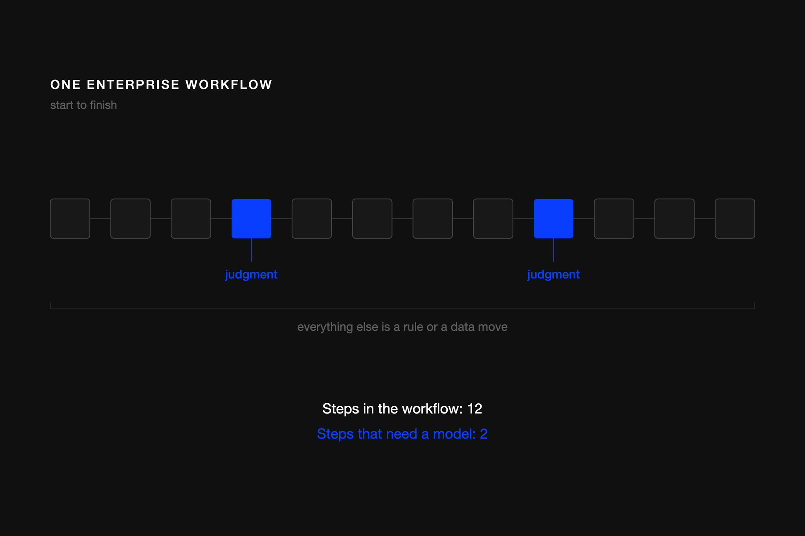
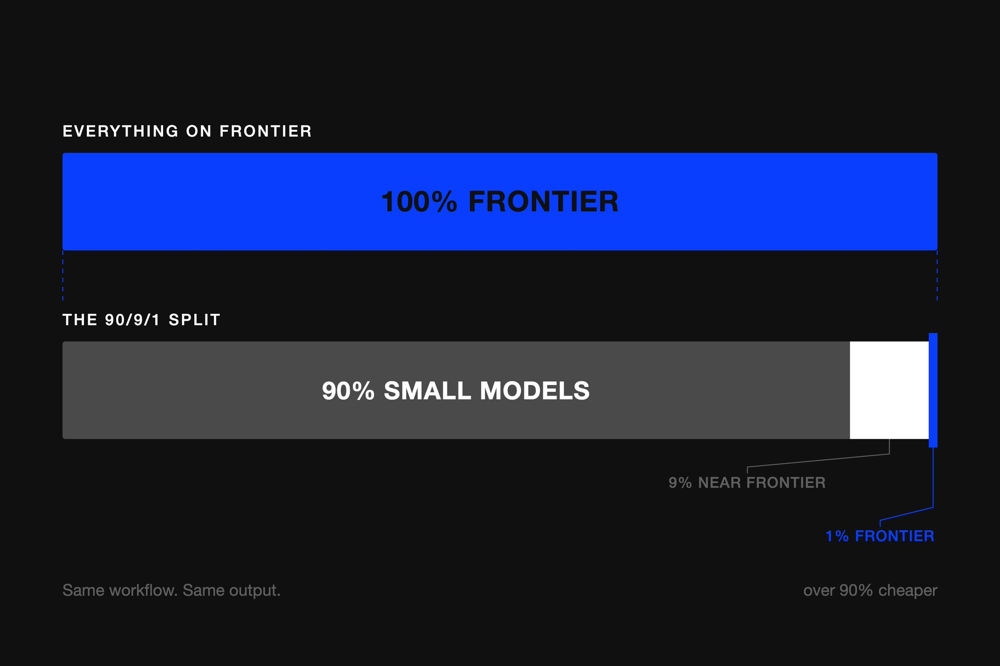
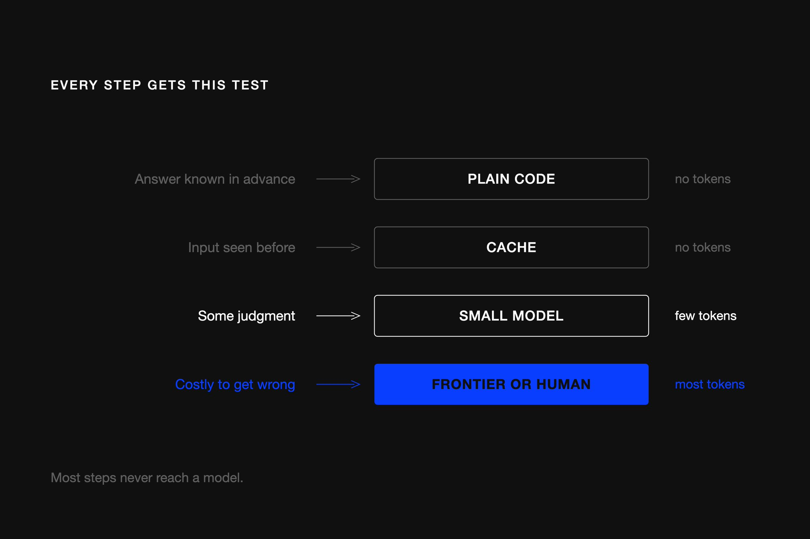
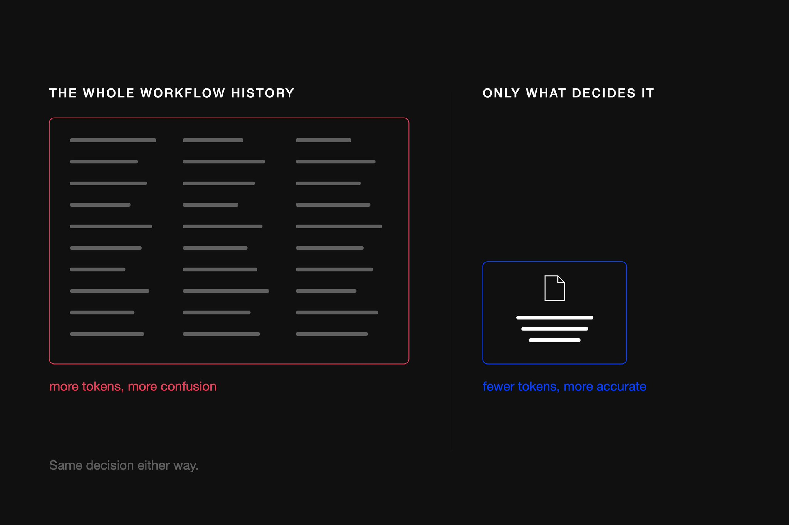

不用开源模型，也能把公司的token花费削减90% 以上。作者是Varick（为全球最大公司构建agent）的CEO。一年前token花费还不是话题，如今大公司AI用量暴涨、账单跟着涨，生产力却只涨了一点点，也没变成高管期望的财务回报。
现在他们想知道：为什么账单一直在涨？该衡量什么？怎么在不损失效率的情况下降低agent成本？作者从工程侧给出答案：核心是重新思考「智能」花在哪。
一句话：如果10美元的强模型能解决1个难题，10美元的便宜模型能解决100个简单任务，问题就变成：你那些「难题」里，有多少其实只是「简单任务」的捆绑？剧透：大多数都是。
一年前，很多人觉得技术会「改变他们的业务」，不太关心token花销。现在这变了：大公司AI用量大幅上升、token花费跟着涨，但生产力只边际提升，也没变成高管期望的财务回报。现在他们想知道为什么账单一直在涨。

如果智能很贵，怎么用尽可能少的智能，同时确保用到的智能在尽可能便宜地做有用的事？从这个框架出发，衡量标准就清晰了：应该追踪智能的ROI，而不是raw spend，甚至不是人均花费。
Varick的FDE团队负责人Daniel最近写了篇文章：公司很快会用交易公司管理资本的方式管理token花费：把美元从低回报用例挪向高ROI用例。这是财务侧。本文讲工程侧怎么做。
深入token花费后很快发现：很多被称为agentic的工作流，只在少数地方需要LLM判断，但团队却全程用AI。从外面看这些工作流很复杂（写入多个系统、不同分支路径、审批/异常），你可能会判定需要带前沿AI的复杂agent。

但一步步拆开后，agent做的大量工作其实简单且确定：检查字段是否匹配、把数据从一处搬到另一处、套一条规则。这些琐碎任务用代码做便宜得多：用昂贵的智能跑它们是在浪费token。
关键认识：工作流里的步骤数量与所需智能量是两件完全不同的事。一旦分开看，大量企业工作流大部分是确定性的，只有极少数地方模型真正需要思考。凡是确定性的东西，都应该用代码做：多数工作流里的AI是过度配置。
一旦这样看工作流，就意识到我们一直想错了自动化单位。模型现在足够好，可以给它们大量上下文和几个工具，让它们自己跑通相当复杂的流程。但这也意味着模型被用在很多其实不需要它的地方，白白烧掉token预算。
我们见过最大的设计错误：在工作流层面自动化。应该把工作流拆成内部的任务：因为每个任务的智能需求完全不同。一旦知道哪些组件需要AI、哪些不需要，就能更细粒度地决定AI用在哪，只在需要判断的地方花token。
这些主要是无法提前知道正确答案、取决于情境的部分。例如agent收到一封邮件，邮件含义取决于客户在问什么。只要答案依赖背景上下文、且有不止一种合理处理方式，那里才是模型有用的地方：因为有真正的判断要做。
下一个常见错误：把所有需要一点判断的任务都指向最强的前沿模型。我们的方法论是把工作流拆成任务，然后对每个任务benchmark各模型，用能可靠处理它的最小模型：而不是把整件事一次调用丢给前沿模型。
最终的系统在能用Gemini 3.6 Flash的地方用它，只在绝对必要时才动用Opus。粗略分布：90% 非前沿、9% 近前沿、1% 前沿。我们称之为90/9/1拆分。与全部跑前沿模型相比，这个拆分就是本文开头那90% 的来源。
评估一个步骤真正需要多少智能后，会发现大多数步骤不需要强大模型：有些步骤根本不需要模型。确定性步骤应该是普通代码（例如：如果收到邮件，下载附件，如果有的话）。简单推理交给更小更便宜的模型，例如Gemini 3.6 Flash（例如：读发票行项目，如果是订书机，调用LLM做GL编码归到正确类别，如「办公用品」）。

已知输出可以从缓存复用，而不是每次都重新生成（例如：每次读行项目，把它的GL编码映射到缓存，以后看到「订书机」就直接知道是「办公用品」，连LLM都不必调用）。
三条路对应图4的判定：能不能提前知道答案？能就写代码。需要一点判断？用最小的可靠模型。错不起？升级到更强模型或人。
从工作流实际今天的运行方式开始，通常会找到很多不需要模型就能确定结果的地方，那些应该变成代码：如果这样，就那样，老派方式。剩余的是需要判断的小区域：模型在那里必要，但步骤不需要同样的智能强度。小模型可能完全够用，另一步则需要更强的。有大量判断或领域知识、或答错代价太高时，保持人在环。

context是另一块token被低效消耗的大头。过去两年做applied AI的教训：模型周围的harness对token花费影响巨大。好的harness防止模型被不需要的信息淹没。如果决定只取决于几个字段和单个文档，就没有理由每次LLM调用都发送整个工作流历史。
窄context也更准确：不相干信息恰恰是模型容易困惑的地方。别把整个工作流历史喂给每次模型调用。
很多从外面看agentic的工作流，拆开后大部分是确定性的。你几乎不应该让一个模型推理整个工作流，而应把工作流拆成独立任务，再逐任务决定哪个真正需要模型。

对每个任务深入检查实际需要的判断量：能提前知道答案就用代码；需要一些判断就用能可靠处理的最小模型；答错代价高就升级到更强模型或人。
尽可能收窄context，并在相同输入反复出现时用缓存复用输出。长话短说：目标是节俭地使用智能：不只是为了token花费，也是为了准确性。
参考：https://x.com/vasuman/status/2089436710257959073